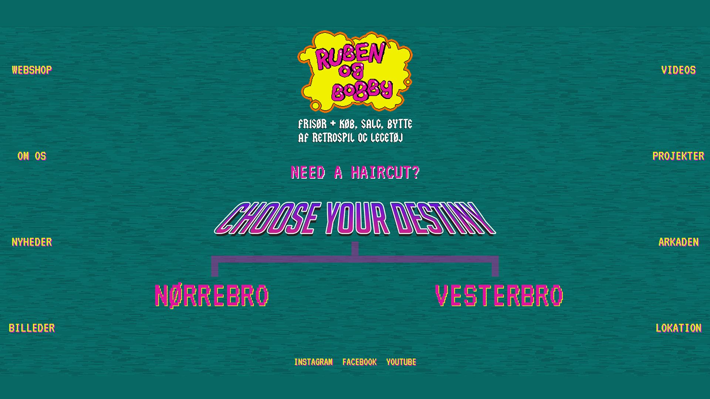
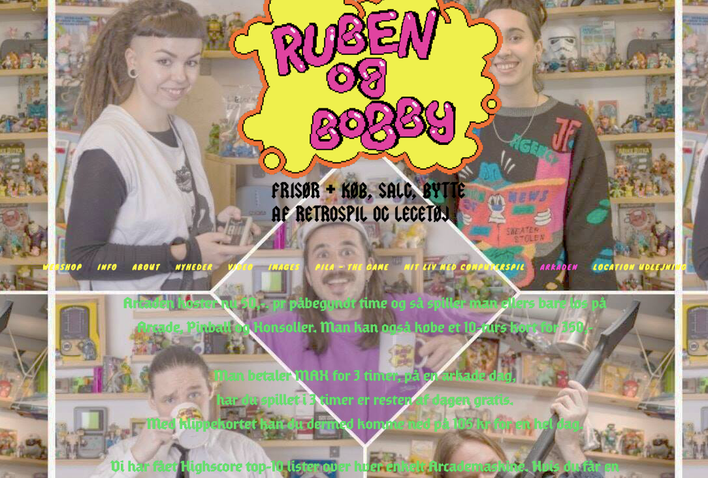
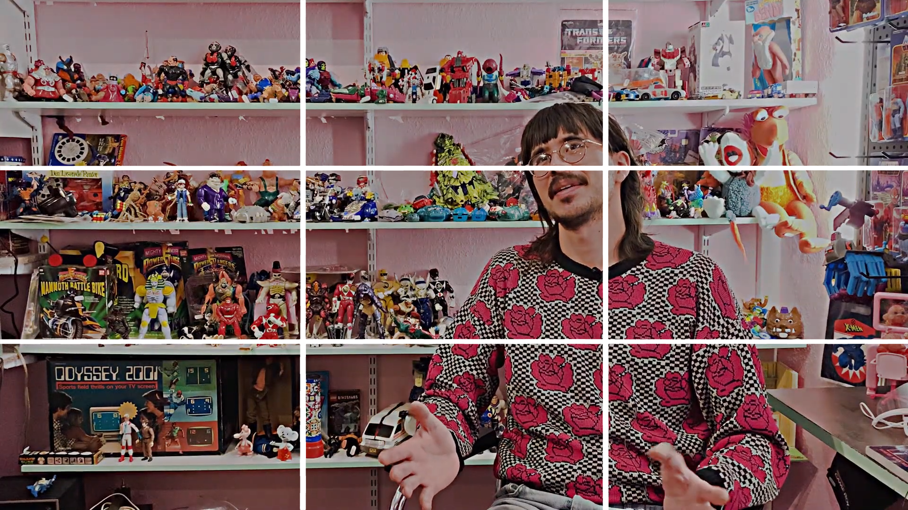

Redesign og temadokumentation

(Du kommer ind på opgaven vet at trykke på billedet ovenover)
Opgave: 05.03.01 Redesign og temadokumentation
Værktøjer: HTML / CSS / Javascript / Adobe Photoshop / Adobe Illustrator / Adobe Premiere
Projekt type: Redesign / Kodning / Optagelse / Videoredigering
Sidst i Tema 5 skulle vi samle alle vores færdigheder som vi har fået i de foregående temaer til at redesigne en virksomheds hjemmeside. Vi startede med at lave en gruppekontrakt for at afstemme vores forskellige ønsker og rammer om hvordan vores samarbejde skulle foregå. Vi anvendte SCRUM og Double-Diamond metoder for at have bedre overblik og konstant have udvikling i vores arbejdsproces. Derefter lavede vi aftaler med ejeren af virksomheden hvor vi mødtes og analyserede virksomhedens profil og den eksisterende webside. Efterfølgende udførte vi bl.a. BERT-testen for at finde ud af daværende hjemmesidens standpunkt og den retning som vi skulle bevæge os i mod. Resultaterne af BERT-testen viste at websiden virkede meget uoverskuelig, rodet og utroværdig, derfor lagde vi meget vægt på disse tre punkter for at lave det om. Da selve indholdet var meget svær at læse på websiden, valgte vi en colorpalette hvor indholdet stod i kontrast i forhold til baggrunden og gav selve hjemmesiden mere white space for skabe ro omkring delelementerne, dette gav websiden en mere raffineret look. Når det kommer til videoen har vi anvendt effekter i Adobe Premiere for at understrege retro stemningen af virksomheden. I sidste del af opgaven skulle vi pitche vores redesign, dette er en god måde at præsentere ideer og problemløsninger over for kunden.
Hjemmesiden før redesign

Rule of thirds på videoen
